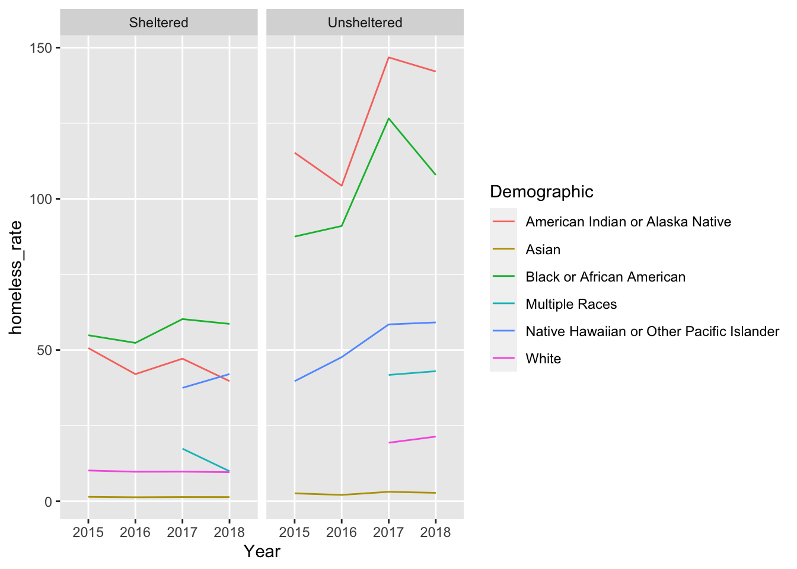

library(tidyverse)
library(readxl)
pit_url <- "https://www.huduser.gov/portal/sites/default/files/xls/2007-2021-PIT-Counts-by-State.xlsx"
temp <- tempfile()
download.file(pit_url, temp)
get_pit <- function(pit_year){
read_excel(temp, sheet = pit_year) |>
select(State, 71:74, 77:82, 87:90, 93:98)
}
pit <- map(c("2015", "2016", "2017", "2018", "2019", "2020"), get_pit) |>
reduce(left_join, by = "State")
pit_colnames <- data.frame(pit_names = colnames(pit))Lab 7: Tidying Data
Introduction
In this lab, we will create a few data visualizations documenting point-in-time counts of homelessness in the United States. Specifically, we are going visualize data collected in 2020 through various Continuums of Care (CoCs) programs. In order to produce these data visualizations, you will need to develop and execute a plan for how to wrangle the dataset into a “tidy” format.
Learning Goals
- Recognize the differences between tidy and non-tidy data
- Pivot datasets both longer and wider
- Separate and unite columns
- Consider the ethical implications of analyzing homeless counts
Review of Key Terms
Tip
You may wish to reference this Tidy R Cheatsheet when completing this lab.
- Tidy data
-
A rectangular data table in which every row is an observation and every column is a variable describing something about that observation
- Pivoting
-
Rotating data columns so that they are presented as rows or rotating data rows so that they are presented as columns
HUD’s Point-in Time Counts
The U.S. Department of Housing and Urban Development…
Continuums of Care are local planning organizations responsible for allocating resources and coordinating services to address homelessness.
Setting Up Your Environment
- Run the code below to load today’s data frames into your environment.
library(tidyverse)
library(tidycensus)
get_race <- function(cen_year){
get_acs(geography = "state",
variables = c("C02003_003",
"C02003_004",
"C02003_005",
"C02003_006",
"C02003_007",
"C02003_009"),
year = cen_year) |>
rename_with(.fn = ~paste0(., "_", cen_year), .cols = estimate:moe)
}
get_gender <- function(cen_year){
get_acs(geography = "state",
variables = c("B01001_026",
"B01001_002"),
year = cen_year) |>
rename_with(.fn = ~paste0(., "_", cen_year), .cols = estimate:moe)
}
race <- map(c(2015:2020), get_race) |>
reduce(left_join, by = c("GEOID", "NAME", "variable"))
gender <- map(c(2015:2020), get_gender) |>
reduce(left_join, by = c("GEOID", "NAME", "variable"))
race$variable <-
recode(race$variable,
C02003_003 = "White",
C02003_004 = "Black or African American",
C02003_005 = "American Indian or Alaska Native",
C02003_006 = "Asian",
C02003_007 = "Native Hawaiian or Other Pacific Islander",
C02003_009 = "Multiple Races")
gender$variable <-
recode(gender$variable,
B01001_026 = "Female",
B01001_002 = "Male")pit_pivoted <-
pit |>
pivot_longer(2:81,
names_to = "Measure",
values_to = "Value") |>
separate(Measure, into = c("Shel_Unshel", "Demographic"), sep = " - ") |>
separate(Demographic, into = c("Demographic", "Year"), sep = ", ") |>
mutate(Shel_Unshel = str_replace(Shel_Unshel, " Homeless", ""),
Shel_Unshel = str_replace(Shel_Unshel, " Total", "")) |>
mutate(StateName = state.name[match(State, state.abb)]) |>
mutate(Measure = case_when(Demographic %in% c("Female",
"Male",
"Transgender",
"Gender Non-Conforming") ~
"Gender",
TRUE ~ "Race"))race_pivoted <-
race |>
pivot_longer(estimate_2015:moe_2020,
names_to = "Measure",
values_to = "Value") |>
separate(Measure, into = c("Measure", "Year"), sep = "_") |>
pivot_wider(names_from = Measure,
values_from = Value)
gender_pivoted <-
gender |>
pivot_longer(estimate_2015:moe_2020,
names_to = "Measure",
values_to = "Value") |>
separate(Measure, into = c("Measure", "Year"), sep = "_") |>
pivot_wider(names_from = Measure,
values_from = Value)pit_race_rates <-
pit_pivoted |>
filter(Measure == "Race") |>
inner_join(race_pivoted, by = c("StateName" = "NAME",
"Demographic" = "variable",
"Year" = "Year")) |>
mutate(homeless_rate = Value/estimate * 10000)
pit_gender_rates <-
pit_pivoted |>
filter(Measure == "Gender") |>
inner_join(gender_pivoted, by = c("StateName" = "NAME",
"Demographic" = "variable",
"Year" = "Year")) |>
mutate(homeless_rate = Value/estimate * 10000)options(scipen=999)
pit_race_rates |>
filter(Measure == "Race" & State == "CA") |>
ggplot(aes(x = Year, y = homeless_rate, col = Demographic, group = Demographic)) +
geom_line() +
facet_wrap(vars(Shel_Unshel))
Ethical Considerations
In March 2020, the Environmental Protection Agency published a memo that permitted industrial facilities impacted by the Covid-19 pandemic to temporarily suspend mandated pollution monitoring. Research published by the Environmental Data Governance Initiative (EDGI) (Nost et al. 2020) has indicated that, during this time, reported violations to the Clean Air Act and the Clean Water Act dropped considerably. However, EDGI’s report goes on to argue that violations were likely being under-counted at this time. …first, because facilities were not being required to monitor and report data to the same degree during Covid-19, and second, because the EPA was conducting fewer inspections during Covid-19. In sum, as they say, “the absence of data should not be taken as the absence of pollution.” What social harms emerge in the wake of these data absences? Who benefits from these policies, and who faces the greatest risks? How should we as data scientists think and act as we anaylze and present this data?
References
Nost, Eric, Kelsey Breseman, Steve Hansen, Leslie Alanis, Megan Raisle, Lourdes Vera, Maalvika Bhat, Sara Wylie, Sung-Gheel (Gil) Jang, and EDGI. 2020. “More Permission to Pollute: The Decline of EPA Enforcement and Industry Compliance During COVID.” Ke. https://envirodatagov.org/more-permission-to-pollute-the-decline-of-epa-enforcement-and-industry-compliance-during-covid/.